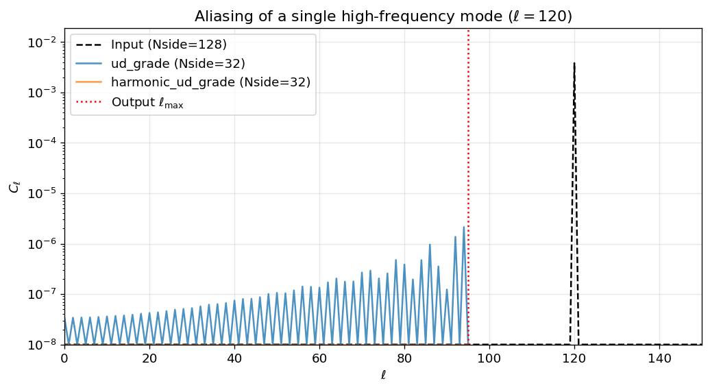
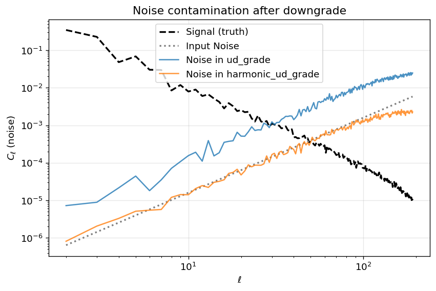

harmonic_ud_grade vs ud_grade: A Focused Comparison
When working with HEALPix maps, it is often necessary to change the resolution — for example, to downgrade a high-resolution observation map to a lower Nside for comparison with a model, or to reduce computational cost for large-scale analyses.
healpy provides two functions for this:
ud_grade: operates purely in pixel space by averaging groups of sub-pixels. It is fast, but because it does not apply any anti-aliasing filter, high-multipole power from the input grid “folds” back into the output — a phenomenon known as aliasing.
harmonic_ud_grade: operates in spherical-harmonic space. It decomposes the input map into \(a_{\ell m}\) coefficients, applies the pixel-window correction following the prescription in Planck 2015 XVI Eq. 1, and optionally scales the beam. Because the harmonic transform naturally band-limits the output, aliasing is eliminated.
How harmonic_ud_grade works
The function implements the following per-\(\ell\) transfer (Planck 2015 XVI Eq. 1):
where \(p_\ell\) is the HEALPix pixel-window function and \(b_\ell\) is a Gaussian beam transfer function. The algorithm proceeds in three steps:
Analysis: The input map is decomposed into \(a_{\ell m}\) via map2alm (using pixel weights by default for high accuracy).
Transfer: Each \(a_{\ell m}\) is multiplied by the ratio of output/input pixel windows and beams. Modes above \(\ell_{\max}^{\rm out}\) are discarded (band-limiting).
Synthesis: The modified \(a_{\ell m}\) are synthesised into a map at nside_out via alm2map.
Function signature and arguments
hp.harmonic_ud_grade( map_in, # Input map(s), RING ordering nside_out, # Target Nside lmax=None, # Max multipole (default: min(3*nside_out - 1, 3*nside_in - 1)) mmax=None, # Max m (default: lmax)iter=None, # map2alm iterations (see below) pol=True, # Treat 3-component input as TQU/TEB pixwin=True, # Deconvolve/apply pixel windows fwhm_in, # Input beam FWHM [radians] (required when smoothing) fwhm_out=None, # Output beam FWHM [radians] (see below) use_weights=False, # Use ring weights in map2alm datapath=None, # Path to pixel-weight files use_pixel_weights=True, # Use full pixel weights (recommended) dtype=None, # Cast output to this dtype)
Key defaults and their rationale:
Argument
Default
Rationale
lmax
min(...)
Standard HEALPix bandlimit, capped by the input resolution. See explanation below.
iter
None (auto)
Uses 0 iterations when pixel weights are active and lmax <= 1.5*nside_in (the regime where pixel weights alone are sufficient); otherwise 3 iterations.
pixwin
True
Deconvolves the input pixel window \(p^{\rm in}_\ell\) and applies the output pixel window \(p^{\rm out}_\ell\), ensuring the output map has the correct effective resolution.
fwhm_in
required*
FWHM of the input beam in radians. Must be set to the actual beam FWHM when working with beam-convolved data, otherwise the output will be incorrectly deconvolved. Pass 0 or fwhm_out=0 if the input map has no beam.
fwhm_out
None (auto)
Auto-computed as PLANCK_K * nside2resol(nside_out) where PLANCK_K = 160.0 / (degrees(nside2resol(64)) * 60) (≈ 2.91). This matches the exact FWHM-to-pixel ratio used consistently across all Planck resolutions. Pass 0 to disable output smoothing.
use_pixel_weights
True
Uses full per-pixel weights for high-accuracy spherical harmonic transforms. If the weight files are not available, an error is raised (pass False to fall back to unweighted transforms).
lmax default:3·nside_out – 1 is the standard HEALPix bandlimit, but it is capped to 3·nside_in – 1 when upgrading resolution. This prevents the transform from requesting multipoles the input map cannot meaningfully provide.
fwhm_in required: Because fwhm_out defaults to a Planck-scaled smoothing beam, fwhm_in is required so the beam transfer ratio is always explicit. If the input map has no beam, pass fwhm_in=0 (the equivalent of fwhm_out=0 disables this requirement).
Notebook overview
This notebook compares the two methods through four tests: 1. Aliasing stress test — a single high-\(\ell\) mode that should vanish after downgrading. 2. Power-spectrum recovery — a broadband synthetic signal where spectral fidelity matters. 3. Noise aliasing — a realistic scenario with “blue” noise that grows at high \(\ell\), mimicking beam-deconvolved instrumental noise. 4. Point sources — a case where ud_grade is the better choice due to Gibbs ringing in the harmonic approach. > Also see:harmonic_ud_grade vs skytools.change_resolution — a side-by-side API comparison including custom beam transfer functions, pixel-window handling, and input_type='alm'.
import timeimport numpy as npimport healpy as hpimport matplotlib.pyplot as pltplt.rcParams.update({"figure.dpi": 120, "font.size": 11})# Planck 2013 XXIII Table 1: exact FWHM-to-pixel ratioPLANCK_K =160.0/ (np.degrees(hp.nside2resol(64)) *60)print(f"healpy {hp.__version__}")print(f"Planck FWHM/pixel ratio: {PLANCK_K:.4f}")
1. Aliasing Stress Test: A Single High-\(\ell\) Mode
The simplest way to reveal aliasing is to construct a pathological input: a map at nside_in = 128 that contains power at exactly one spherical-harmonic multipole, \(\ell = 120\).
The target resolution is nside_out = 32, whose maximum resolvable multipole is \(\ell_{\max} = 3 \times 32 - 1 = 95\). Since \(\ell = 120 > \ell_{\max}\), a correct downgrade must produce an output whose angular power spectrum is identically zero.
Key parameter choices: - pixwin=True is passed both when creating the input map (alm2map) and when calling harmonic_ud_grade. This simulates a realistic pixelised observation and allows harmonic_ud_grade to properly deconvolve the input pixel window and apply the output pixel window. - fwhm_in=0 because the synthetic input has no instrumental beam.
nside_in =128nside_out =32lmax_out =3* nside_out -1# Single mode at ell=120alm_single = np.zeros(hp.Alm.getsize(120), dtype=np.complex128)alm_single[hp.Alm.getidx(120, 120, 0)] =1.0# We generate the synthetic map and run downgrade methods with pixwin=True.# This simulates a realistic pixelized map and allows harmonic_ud_grade# to properly apply its pixel window correction (Eq 1).m_in = hp.alm2map(alm_single, nside=nside_in, pixwin=True)# Downgrade methodsm_ud = hp.ud_grade(m_in, nside_out=nside_out)# fwhm_in is required# For this synthetic test there is no input beam → pass 0m_harm = hp.harmonic_ud_grade( m_in, nside_out=nside_out, fwhm_in=0, use_pixel_weights=False, pixwin=True, fwhm_out=0,)cl_in = hp.anafast(m_in)cl_ud = hp.anafast(m_ud)cl_harm = hp.anafast(m_harm)plt.figure(figsize=(10, 5))plt.semilogy(np.maximum(cl_in, 1e-8), label=f"Input (Nside={nside_in})", color="black", linestyle="--")plt.semilogy(np.maximum(cl_ud, 1e-8), label=f"ud_grade (Nside={nside_out})", alpha=0.8)plt.semilogy(np.maximum(cl_harm, 1e-8), label=f"harmonic_ud_grade (Nside={nside_out})", alpha=0.8)plt.axvline(lmax_out, color="red", ls=":", label=r"Output $\ell_{\max}$")plt.xlabel(r"$\ell$")plt.ylabel(r"$C_\ell$")plt.xlim(0, 150)plt.ylim(1e-8, cl_in.max() *5)plt.title("Aliasing of a single high-frequency mode ($\\ell=120$)")plt.legend()plt.grid(alpha=0.3)plt.tight_layout()plt.show()

Interpretation of the plot above:
Black dashed line (Input): The input power spectrum has a sharp peak at \(\ell = 120\) and is essentially zero everywhere else. The satellite peaks visible around \(\ell = 120\) are due to the pixel window of the nside_in = 128 grid.
Orange line (harmonic_ud_grade): The output spectrum is numerically zero across all multipoles — exactly the correct answer. The harmonic transform naturally band-limits the result to \(\ell \le \ell_{\max}\), so the \(\ell = 120\) mode is cleanly removed.
Blue line (ud_grade): Significant spurious power appears across the entire output multipole range. This is aliasing: because pixel-space averaging has no frequency cutoff, the high-\(\ell\) mode is “folded” back into the lower multipoles, corrupting the output with an oscillating pattern.
Red dotted line: The output bandlimit \(\ell_{\max} = 95\).
The RMS values below quantify this: ud_grade retains about 43 % of the original map RMS as pure aliasing artefact, while harmonic_ud_grade suppresses it to the numerical noise floor.
The single-mode test above is deliberately extreme. Real sky maps contain power at all multipoles, so aliasing from ud_grade is spread across the full spectrum, making it harder to spot by eye but no less damaging to science.
In this section we synthesise a realistic broadband signal with \(C_\ell \propto \ell^{-2}\) (a spectrum often used for test purposes) at nside_in = 256, downgrade to nside_out = 64, and compare the recovered power spectrum against a ground-truth reference.
The reference is built by truncating the original \(a_{\ell m}\) to \(\ell_{\max}^{\rm out}\) and synthesising directly at the output resolution, so both the reference and the downgraded maps contain the same pixel-window effects. Any difference between them is therefore purely due to the downgrade method.
Left panel — Power spectra after downgrade: All three curves agree well at low \(\ell\), but diverge at high multipoles. The reference (black dashed) and harmonic_ud_grade (orange) both roll off smoothly beyond \(\ell \approx 100\): this is the expected damping from the pixel window of the nside_out = 64 grid. ud_grade (blue), by contrast, shows a visible excess of power in this regime because aliased high-frequency structures from above \(\ell_{\max}\) have been folded back into the output.
Right panel — Fractional spectral error relative to truth: This panel makes the aliasing bias quantitative. - harmonic_ud_grade (orange) sits flat on 0 % error — it matches the truth map almost perfectly. - ud_grade (blue) is systematically positive, meaning it over-estimates the power. This is expected: aliasing can only add power, never subtract it. The error grows rapidly toward \(\ell_{\max}\), reaching 50–70 % near the bandlimit.
Because both the reference and the downgraded maps include the same pixel window, window effects cancel exactly in the ratio. The residual is pure aliasing.
The RMS fractional error below summarises this over the “safe” multipole band \(\ell \in [2,\, 2 N_{\rm side}^{\rm out}]\):
safe =slice(2, 2* nside_out +1)print(f"RMS frac. error over safe band ℓ ∈ [2, {2*nside_out}]:\n"f" ud_grade: {np.sqrt(np.mean(frac_ud[safe]**2))*100:.2f}%\n"f" harmonic_ud_grade: {np.sqrt(np.mean(frac_harm[safe]**2))*100:.2f}%")
RMS frac. error over safe band ℓ ∈ [2, 128]:
ud_grade: 2.34%
harmonic_ud_grade: 0.00%
3. Noise Aliasing — The Real-World Failure Mode
The tests above used noiseless inputs, but real observational data always contain instrumental noise. In CMB data processing a particularly important case is blue noise — noise whose power spectrum grows with \(\ell\) (e.g., \(C_\ell^{\rm noise} \propto
\ell^{2}\)). This commonly arises when a map is beam-deconvolved: dividing out the beam’s Gaussian roll-off amplifies the high-frequency noise enormously.
Because ud_grade operates in pixel space with no frequency cutoff, all of that amplified high-\(\ell\) noise above \(\ell_{\max}^{\rm out}\) is aliased back into the signal band, dramatically raising the noise floor. harmonic_ud_grade avoids this by band-limiting the map before downgrading.
Below we construct a signal + blue-noise map at nside_in = 512, downgrade to nside_out = 64 (a factor-8 step), and isolate the noise contribution in each output. The larger resolution ratio means there is a vast reservoir of high-\(\ell\) noise power above \(\ell_{\max}^{\rm out} = 191\) that can potentially alias back.
plt.figure(figsize=(8, 5))plt.loglog(ell_out[2:], cl_signal_out[2:], "k--", lw=2, label="Signal (truth)")plt.loglog(ell_out[2:], cl_noise[:lmax_out +1][2:], "gray", ls=":", lw=2, label="Input Noise")plt.loglog(ell_out[2:], cl_noise_ud[2:], alpha=0.8, label="Noise in ud_grade")plt.loglog(ell_out[2:], cl_noise_harm[2:], alpha=0.8, label="Noise in harmonic_ud_grade")plt.xlabel(r"$\ell$")plt.ylabel(r"$C_\ell$ (noise)")plt.title("Noise contamination after downgrade")plt.legend()plt.grid(alpha=0.3)plt.tight_layout()plt.show()

Interpretation of the plot above:
This plot isolates the noise-only component after downgrading from nside = 512 to nside = 64 (a factor-8 resolution step). Each curve has a specific meaning:
Black dashed (Signal truth): The true signal power spectrum at the output resolution. It is shown for context so you can judge where noise starts to dominate over signal.
Grey dotted (Input Noise): The raw analytic noise spectrum \(C_\ell^{\rm noise} \propto \ell^{2}\) as injected into the input map. It crosses the signal near \(\ell \approx 50\) (the chosen knee multipole) and grows steeply beyond.
Orange (harmonic_ud_grade): The noise residual after harmonic downgrading. It tracks the input noise closely at low \(\ell\) and rolls off above \(\ell \approx 100\) due to the target pixel window — exactly as expected.
Blue (ud_grade): The noise residual after pixel-space downgrading. Across the full multipole range, the ud_grade noise is roughly 5–10× higher than the harmonic_ud_grade noise. This excess is entirely due to aliased high-\(\ell\) noise being folded into the signal band. The effect grows with the resolution ratio: a larger step (here 8×) means more high-\(\ell\) modes available to alias, producing a larger noise floor uplift.
Why this matters in practice: When analysing real CMB or astrophysical data, any aliased noise that leaks into the low-\(\ell\) modes will bias power-spectrum estimates, cross-correlations, and component-separation results. harmonic_ud_grade prevents this by applying a strict harmonic bandlimit before re-gridding to the output resolution.
4. When ud_grade Wins: Point Sources and Gibbs Ringing
The previous sections show that harmonic_ud_grade is clearly superior for broadband or noisy signals. But there is an important case where ud_grade is the better choice: maps dominated by compact, localised features such as point sources or binary masks.
A point source is a delta function on the sky, which means it has power at all multipoles. When harmonic_ud_grade band-limits the map to \(\ell_{\max}^{\rm out}\), it truncates the harmonic expansion abruptly, producing oscillating Gibbs ringing around each source. ud_grade, operating purely in pixel space, simply averages the sub-pixels and preserves the compact, positive-definite nature of the source.
To make this test realistic, we simulate point sources as an instrument would observe them: we paint a Gaussian beam profile directly in pixel space at each source position, using the Planck-suggested FWHM for the input resolution. We then compare three downgrade strategies: 1. ud_grade — pixel-space averaging. 2. harmonic_ud_grade with fwhm_out = 0 — band-limit only, no additional smoothing. 3. harmonic_ud_grade with default fwhm_out — Planck-scaled output beam.
nside_in =256nside_out =64# Planck-suggested beam for this resolutionfwhm_in_pts = PLANCK_K * hp.nside2resol(nside_in)sigma_in = fwhm_in_pts / (2* np.sqrt(2* np.log(2)))print(f"Nside_in = {nside_in}, fwhm_in = {np.degrees(fwhm_in_pts)*60:.1f} arcmin "f"(Planck ratio)")# Simulate point sources as an instrument would see them:# paint a Gaussian beam profile directly in pixel space.m_pts = np.zeros(hp.nside2npix(nside_in))np.random.seed(123)src_pixels = np.random.choice(hp.nside2npix(nside_in), size=5, replace=False)src_vecs = np.array(hp.pix2vec(nside_in, src_pixels)).T # (5, 3)all_vecs = np.array(hp.pix2vec(nside_in, np.arange(hp.nside2npix(nside_in)))).Tfor src_vec in src_vecs: cos_dist = np.dot(all_vecs, src_vec) cos_dist = np.clip(cos_dist, -1, 1) ang_dist = np.arccos(cos_dist) m_pts +=100.0* np.exp(-0.5* (ang_dist / sigma_in) **2)# Downgrade: three methodsm_pts_ud = hp.ud_grade(m_pts, nside_out=nside_out)# harmonic_ud_grade with NO additional smoothing (band-limit only)m_pts_harm_nosmooth = hp.harmonic_ud_grade( m_pts, nside_out=nside_out, fwhm_in=fwhm_in_pts, use_pixel_weights=False, pixwin=True, fwhm_out=0,)# harmonic_ud_grade with Planck default output beamm_pts_harm_smooth = hp.harmonic_ud_grade( m_pts, nside_out=nside_out, fwhm_in=fwhm_in_pts, use_pixel_weights=False, pixwin=True, fwhm_out=None,)print(f"ud_grade: min={m_pts_ud.min():.4f}, max={m_pts_ud.max():.2f}, "f"negative pixels: {(m_pts_ud <0).sum()}")print(f"harmonic (no smooth): min={m_pts_harm_nosmooth.min():.4f}, "f"max={m_pts_harm_nosmooth.max():.2f}, "f"negative pixels: {(m_pts_harm_nosmooth <0).sum()}")print(f"harmonic (Planck): min={m_pts_harm_smooth.min():.4f}, "f"max={m_pts_harm_smooth.max():.2f}, "f"negative pixels: {(m_pts_harm_smooth <0).sum()}")
The four panels zoom in on one point source that was simulated with a realistic Gaussian beam painted directly in pixel space (FWHM ≈ 40 arcmin for Nside = 256).
Panel 1 (Input): The beam-convolved point source at the input resolution — a smooth Gaussian profile, as an instrument would observe it.
Panel 2 (ud_grade): Pixel-space averaging preserves the smooth, positive-definite profile of the beam. No ringing, no negative pixels.
Panel 3 (harmonic_ud_grade, no smoothing): Band-limiting to \(\ell_{\max} = 191\) without additional smoothing produces visible Gibbs ringing — oscillations with negative values around the source. Even though the input is beam-convolved (not a true delta), the beam is narrow enough that significant power remains above \(\ell_{\max}^{\rm out}\), and truncating it causes ringing.
Panel 4 (harmonic_ud_grade, Planck beam): The default Planck-scaled output beam adds extra smoothing that suppresses the ringing significantly. This is the recommended harmonic approach for diffuse science — but for point-source work, ud_grade still produces a cleaner, more compact result.
Takeaway:harmonic_ud_grade is optimal for band-limited signals (CMB, diffuse emission). ud_grade is preferable for pixel-localised features (point sources, binary masks, hit-count maps).
5. Required fwhm_in
harmonic_ud_grade requires fwhm_in so the resolution scaling is always explicit. The default fwhm_out preserves the Planck FWHM-to-pixel ratio across resolutions.
5.1 Default beam scaling
nside_in =2048nside_out =64# Planck beam at Nside=2048 is 5 arcminfwhm_in = np.radians(5/60)m_input = np.zeros(hp.nside2npix(nside_in))# fwhm_out=None auto-computes the Planck-scaled beamexpected_fwhm_out = hp.sphtfunc.PLANCK_K * hp.nside2resol(nside_out)# This should equal 160 arcmin (Planck Nside=64 beam)print(f"Nside_in = {nside_in}, Nside_out = {nside_out}")print(f" fwhm_in = {np.degrees(fwhm_in)*60:.1f} arcmin")print(f" expected fwhm_out = {np.degrees(expected_fwhm_out)*60:.1f} arcmin ← matches Planck Nside=64")# Verify by running the function (it will work even on zeros)m_out = hp.harmonic_ud_grade( m_input, nside_out=nside_out, fwhm_in=fwhm_in, use_pixel_weights=False, pixwin=True, fwhm_out=None,)print(f" ✓ harmonic_ud_grade accepted the call with default fwhm_out")
harmonic_ud_grade is more expensive than ud_grade because it requires a full spherical-harmonic transform (SHT) of the input map. Below we benchmark both methods at nside_in = 512 → nside_out = 128 (10 iterations each).
ud_grade: 176.2 ms
harmonic_ud_grade: 360.5 ms
slowdown: 2.0x
Summary
The table below summarises the key differences between the two downgrading methods demonstrated in this notebook.
Feature
ud_grade
harmonic_ud_grade
Domain
Pixel space (sub-pixel averaging)
Spherical-harmonic space (SHT)
Aliasing
Heavy leakage at all \(\ell\)
Suppressed to numerical noise floor
Spectrum fidelity
Corrupted — aliased power adds positive bias
Correct within the output band
Pixel-window handling
Ignored
Deconvolved/re-applied (Planck 2015 XVI Eq. 1)
Beam scaling
Not handled
Auto-scales FWHM (required fwhm_in)
Gibbs ringing
None — preserves positivity
Ringing around compact sources
Typical speed
Fast (≈ ms)
~5–15× slower (dominated by SHT)
Important note:harmonic_ud_gradesmoothes the output by default via fwhm_out = PLANCK_K * nside2resol(nside_out). The beam transfer deconvolves fwhm_in and applies fwhm_out; passing the wrong fwhm_in (or forgetting it) will silently give an incorrect smoothing. See the fwhm_in parameter discussion above.
Recommendation: - Use harmonic_ud_grade whenever scientific accuracy matters: power-spectrum estimation, component separation, map-level comparisons, or any analysis involving noisy or beam-deconvolved data. - Use ud_grade when working with point-source maps, binary masks, hit-count maps, or when speed is critical and aliasing artefacts are acceptable.